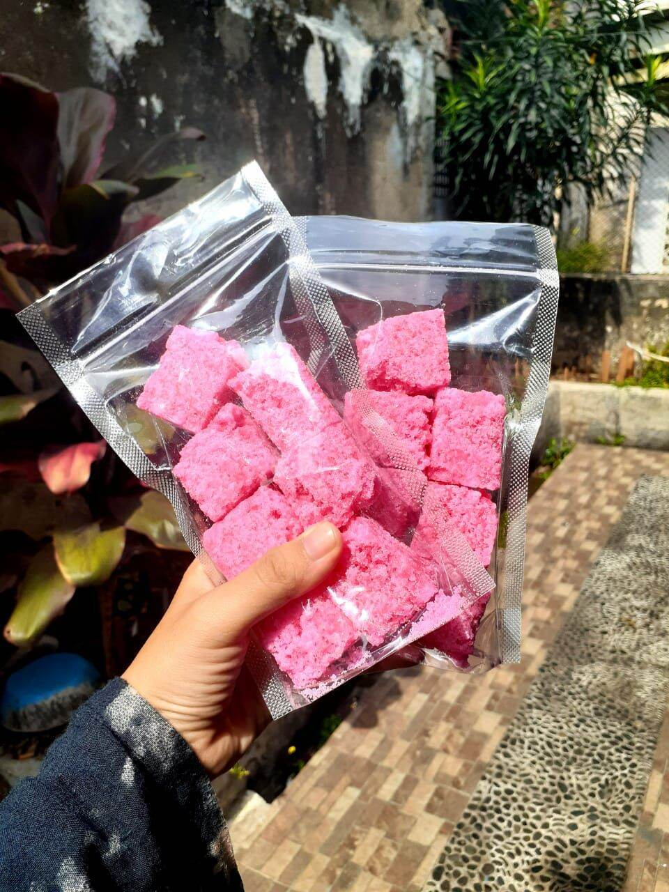

| Gula cakar adalah makanan manis yang terbuat dari campuran gula dan soda yang di bentuk menjadi persegi. Dengan warna merah muda yang unik, gula cakar sering di jadikan oleh-oleh khas majalengka. Wisatawan kerap menggunakan gula ini sebagai campuran dalam minuman teh kopi atau susu. |  |